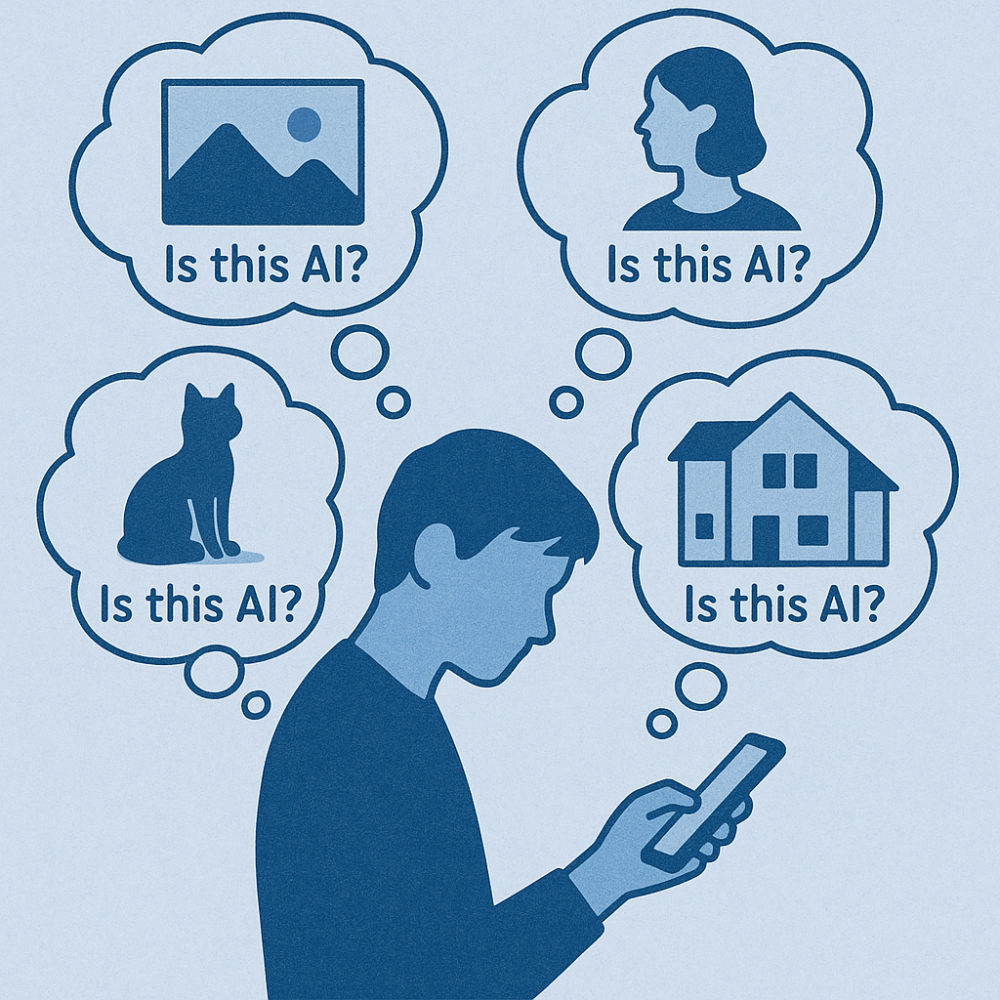
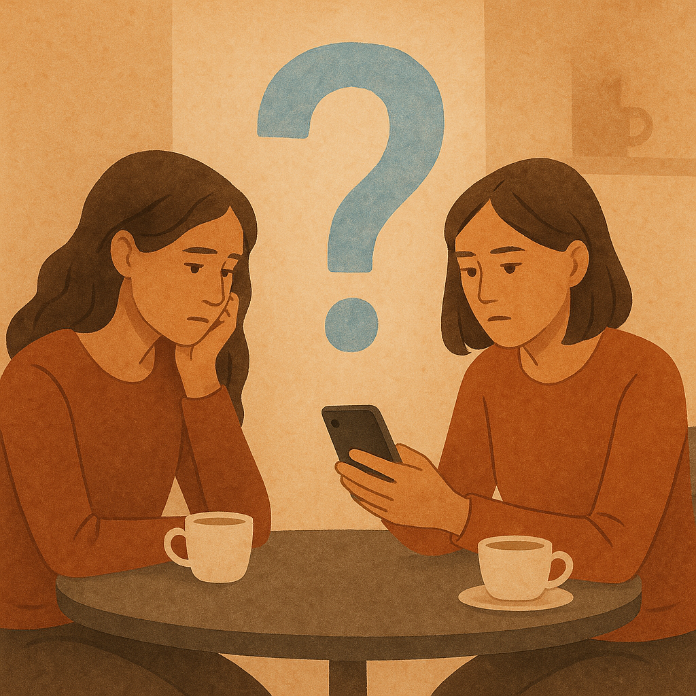
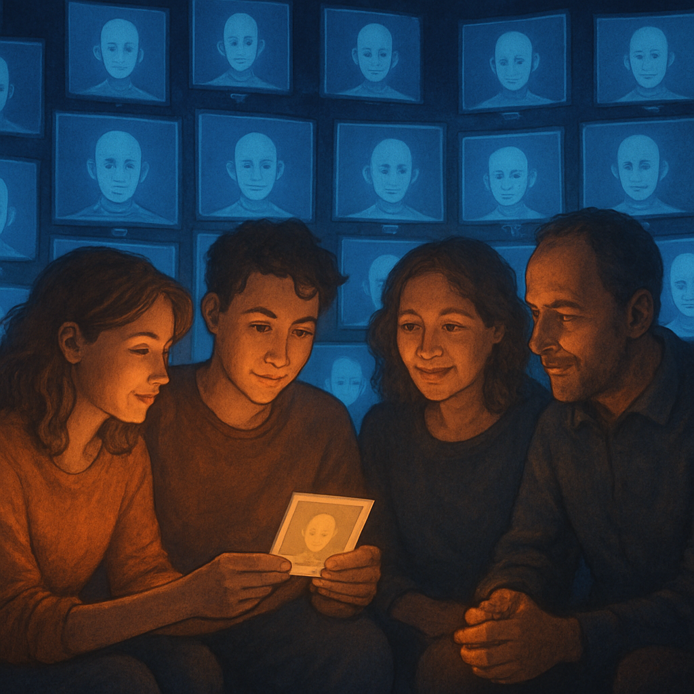

你以为问的是"是不是 AI"，其实问的是"我还能不能相信"
先看一组打脸的数据。
人类识别 AI 生成内容（音频、视频、图片）的准确率是——53.7%。
只比扔硬币高一点点。
更具体一点：能稳定识别 deepfake 视频的人，只有 24.5%。
也就是说，每四个人里就有三个，根本分辨不出来视频是不是 AI 做的。
这意味着什么？
意味着你每天问"这是 AI 吗"这个问题，得到的答案有 47% 的概率是错的。
但你还在问。
为什么？
因为你问的不是"是不是 AI"。你问的是——
"我还能不能像以前那样，不假思索地相信我看到的东西？"
答案是：不能了。
而且这个不能，是永久的。
你以为这只是技术问题。
兄弟们，这是文明级别的转折点。

辨别真伪是个伪命题——AI 的进化速度远超验证速度
很多人寄希望于"鉴别工具"。
让我直接给你拆穿这个幻觉。
第一层：人眼鉴别——前面说了，53.7%。基本等于瞎猜。
第二层：广泛可用的检测技术——大概 65% 准确率。意思是 35% 的内容会被错判。要么真的当假，要么假的当真。哪一种都很糟。
第三层：最先进的实验室级检测——加州大学圣地亚哥分校 2025 年 8 月发布的检测器，可以达到 98.3% 准确率。
听起来很厉害？
兄弟们仔细看那一句话——"在 controlled evaluations"（受控评测）下。
什么叫"受控评测"？就是实验室里给定一批样本，测一遍准确率。
到了真实世界呢？真实世界里，AI 模型每三个月迭代一次，每次迭代都会把上一代检测器打穿。检测器永远在追，AI 永远在跑。
这场赛跑，检测器永远是输的一方。
为什么？
因为 AI 生成的成本是边际递减的——参数越多、训练越久，生成越逼真。
而检测的成本是边际递增的——AI 越逼真，检测算法就越复杂，需要的训练数据就越多。
一个走在下行曲线，一个走在上行曲线。
这道剪刀差只会越张越大。
第四层：C2PA 内容凭证——业界的"终极方案"。
简单说，就是让相机、AI 工具、编辑软件在生成内容时打上加密签名。Adobe、微软、Google、Sony、Nikon、佳能、徕卡、TikTok、Reuters、BBC 都已经在用。三星 Galaxy S25 是第一款原生集成 C2PA 的手机。
听起来很 robust？
兄弟们，这套机制有一个致命漏洞——
社交平台在你上传内容时，会自动 strip 掉所有 metadata。
包括 C2PA 签名。
也就是说，你拍一张带 C2PA 签名的真照片，传到微信、传到 X、传到小红书——签名没了。
到了别人手里，就是一张光秃秃的 JPEG。无法验证。
C2PA 的 governance 团队当然也意识到这个问题，所以推出了 "Durable Content Credentials"——结合 watermark + fingerprint + metadata。但这套方案的部署，至少还要 3-5 年。
而在这 3-5 年里，AI 已经又迭代了 12-20 次。
结论：技术上没解。这场仗不是"暂时不能赢"，是"结构上不可能赢"。
举证责任反转——这是文明级别的转折
接下来这一节是全文最锋利的部分。请慢慢看。
学术界对 AI 时代的核心命名，叫 「Liar's Dividend」——撒谎者红利。
这个词由两位法学教授 Robert Chesney 和 Danielle Citron 在 2019 年提出。
它指的是——
当 AI 可以伪造一切，真实的证据也可以被一句"这是 AI 做的"否定。
兄弟们体会一下这句话的杀伤力。
以前：默认真，怀疑假需要证据。看到一张照片，你的预设是"这是真的"，除非有人能证明它是假的。
现在：默认假，证明真需要证据。看到一张照片，你的预设是"可能是假的"，除非有人能证明它是真的。
举证责任反转了。
这不是一个小变化。这是整个人类信任系统的预设值切换。
历史上有过类似的事——19 世纪相机刚发明时，照片是绝对真实的代名词。后来到 PS 时代，"P 过的"成为新的怀疑预设。但那个转折花了 100 年。
AI 用了 3 年。
让我给你看三个具体的受害者——
受害者一：调查记者
以前一段秘密录音可以扳倒一个贪官。现在贪官可以一句"这是 AI 合成的"，把举证责任甩回给记者。
记者要证明这是真录音——但他证明不了。因为 AI 生成的音频在频谱上和真录音已经无法区分。
整个调查记者的工作方法，被一句话废了。
受害者二：法庭证据
美国已经出现多起案例：被告对监控视频说"这是 AI 做的"，要求重新做技术鉴定。
而鉴定专家说——"我们无法完全排除"。
法官面对"无法完全排除"这五个字，怎么办？只能弱化这个证据的权重。
正义被技术拖延了。
受害者三：你自己
如果有一天你被恶意伤害——比如有人假冒你做坏事——你想拿出"真相"来澄清。
你拿不出来。
因为你的"真"，可以被任何人一句"这是 AI 吧"轻飘飘地否定。
兄弟们想清楚——
Liar's Dividend 是 AI 时代最大的隐藏权力转移。
它把权力从说真话的人手里，转移到了敢撒谎的人手里。
因为说真话的人无法证明自己说的是真话。 而敢撒谎的人不需要证明任何事——他只要说"这可能是 AI" 就够了。
这不是技术问题。这是一个文明级别的伦理塌方。
你以为 AI 抢走的是工作，其实抢走的是日常关系里的信任
聊到这里你以为我在说政治和法庭，离你很远？
恰恰相反。
Liar's Dividend 最毒的地方，不在新闻里，在你身边。
我列几个场景，你对照一下你自己——
场景一：同事在飞书发了个"项目复盘 PPT"
你打开第一反应：这是不是 AI 写的？
不重要。重要的是——你心里多了一层过滤。
你以前默认"这是同事的真实工作"，现在默认"这可能是 AI 凑数"。
这层过滤一旦产生，你和同事的协作信任就被打了折扣。
场景二：朋友发来一条"我刚出差去成都，太好吃了"的图文
你点进去看了三秒，心里飘过一个念头：会不会是 AI 生成的？
你不会问出口，因为问出来很尴尬。但你的"真心点赞"已经掺水。
你和朋友的连接，被 AI 削弱了 5%。
场景三：你伴侣发来一段语音说"今晚要加班"
你脑子里闪过：这语音听起来好像有点不对，不会是 AI 合成的吧？
99.9% 是冤枉。但那 0.1% 的怀疑种子，已经种下去了。
兄弟们这才是 AI 真正在做的事——
它不是让你失去工作。是让你失去对身边人不假思索的信任。
这是一种社会基础设施级别的损耗。
经济学家可以用 GDP 算工作损失，但没人能算这种损失——
因为信任是一种"不被注意时才存在"的东西。一旦你开始注意它，它就已经被损坏了。
数据上还有个佐证：Gartner 2026 年 3 月的调研显示，50% 的美国消费者更愿意和"明确不使用生成式 AI"的品牌做生意。
50% 是一个非常恐怖的数字——它意味着市场已经在大规模"逆向选择"：宁可低效，也要真人。
这不是因为消费者反智，是因为消费者用脚投票——
他们买的不是产品，是「不需要每次都怀疑」的安心。

真人做的，正在成为新奢侈品——AI 时代的"有机食品"经济学
如果你以为故事就这么悲观，那 AI 也太无敌了。
实际上，市场已经在自发反弹。
让我给你看几组 2026 年的新数据——
- 45% 资深创意总监主动拒绝 AI 生成的素材进入 tier-1 品牌 campaign，理由是"需要 soul 和 provenance"
- 83% 创作者认为"人工声音"在情感连接上明显优于 AI 生成的声音
- Gucci 等奢侈品开始推"Human-Made Design"运动，强调可见的不完美、可追溯的工艺过程
- Adorno Design、VAWAA 等手工艺平台流量激增，"AI 滤镜疲劳"成为新的消费心理
你看出趋势了吗？
当 AI 内容像工业品一样泛滥，真人内容会像有机食品一样溢价。
这是个经济学规律。
20 世纪 60-70 年代，化肥农业把蔬菜价格打到地板。然后到 21 世纪初，"有机食品"作为新概念出现——更贵、更稀缺、更高端。
它不是因为更营养（科学上至今没确证）。是因为消费者需要"我不被工业化欺骗"的心理慰藉。
AI 时代会重演这个故事——
未来 5 年，"真人手作"会变成一个新的奢侈标签。
照片：手机拍的、有 EXIF 元数据、有可见缺陷、有创作者签名 → 比 AI 生成图贵 10 倍。
文字：能查到作者真实身份、能追溯写作过程（草稿、修改、对话）、有具体场景细节 → 比 AI 生成内容贵 5 倍。
视频：原始素材可调取、拍摄设备可验证、有真实人物在场 → 比 AI 视频贵 20 倍。
但兄弟们也要警惕——
就像出现"装有机"的工业食品，未来一定会出现"装真人"的 AI。
判断"真真人"还是"装真人"，将成为新的认知技能。
我个人感觉，真真人内容会有几个共同特征——
- 不完美：错字、磕巴、犹豫、低效率
- 可追溯：作者有过去 5 年的创作轨迹，可以横向比对
- 有损耗：创作需要时间，所以产出频率必然有上限
- 有偏见：人会有偏好、立场、情绪——AI 反而力求"平衡"
如果一个内容太完美、太高产、太中立——
那它大概率是 AI 或者 AI 加持的伪人。
你怎么办——做"可信任的人"，不做"会鉴别的人"
最后一节，聊聊你。
如果整个 AI 时代的核心问题是社会信任侵蚀——
你的应对策略只有一个方向：别去鉴别，去成为可信任的源。
几个个人感觉。
观察一：放弃"识别 AI"这个执念
这场仗你赢不了。AI 进化速度永远快于你的辨识能力。
你花在"这是不是 AI"上的注意力，本质上是被消耗掉的。AI 时代最贵的资源不是创意，是未被消耗的注意力。
不要把注意力花在鉴别。花在判断这个内容对你有没有价值。
如果有价值——是 AI 是真人都无所谓。
如果没价值——是真人是 AI 都不重要。
观察二：让自己变成"可被验证的信源"
兄弟们，AI 时代不是没有解。解是信任不再依附于内容，而是依附于个人。
未来你能积累的最值钱的资产是——
- 多年可追溯的内容轨迹（公开发表过的、有时间戳的）
- 真实人际网络的背书（认识你的人愿意为你担保）
- 可重复的现场出席（线下见过、有视频证明你在场）
- 特定领域的长期一致性（10 年都在说同一件事的人，造假成本极高）
这些东西 AI 模仿不了。
它可以生成一张你的脸，但生成不了"你这 10 年的连续言论"。
它可以伪造一段你的话，但伪造不了"100 个认识你的人都说这不是你"。
这才是 AI 时代真正的护城河——你作为「人」的可验证性。
观察三：保护你信任的人
社会信任是一张网。一个节点损坏不要紧，整张网瓦解才致命。
不要随便指控别人发的东西是 AI——尤其是你信任的人。
每说一次"你这是不是 AI 做的"，你就在腐蚀自己的信任网络。
如果有疑问，问清楚而不是当面质问。
被怀疑过一次的关系，永远回不到从前。
观察四：你的内容要有"人的指纹"
AI 的弱点是它没有具体的、不可复制的人生经验。
你的文章如果只写普世道理——AI 写得比你好。
你的文章如果写你昨天晚上在便利店看到一个老人买半斤花生米——AI 写不出来。
不是因为 AI 没那个能力。
是因为 AI 没那个经历。
具体场景 + 个人经验 + 情绪痕迹 + 名字和时间——这是 AI 时代你最便宜也最有效的反 AI 武器。
也是你作为"人"留下的指纹。
最后说一句——
AI 不会问"这是 AI 吗"。
AI 也不在乎答案。
但你会问。你也在乎。
这就是人和 AI 的根本差别——不是创作能力，而是关心真实这件事本身。
只要你还关心，你就还是"人"那一边的。
兄弟们，AI 抢走的不是工作，是社会信任。
但社会信任的反攻，也必须靠人。
靠你。靠我。靠每一个还愿意慢一点、还愿意问一句、还愿意为信任买单的人。
